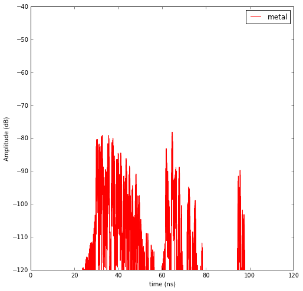
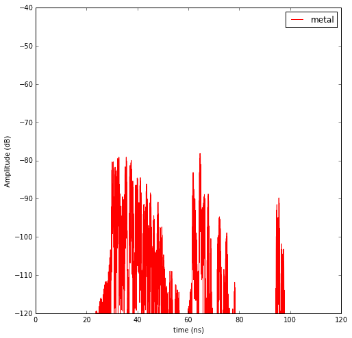

5. Segment and sub-segments¶
<matplotlib.figure.Figure at 0x48fff50>
The studied configuration is composed of a simple 2 rooms building separated by a subsegment which has a multi subsegment attribute. The attribute of the subsegment can be changed with the method chgmss (change multisubsegment)
structure saved in defstr3.str2
structure saved in defstr3.ini
The  graph dictionnary has the following structure
graph dictionnary has the following structure
{-8: {},
-7: {},
-6: {},
-5: {},
-4: {},
-3: {},
-2: {},
-1: {},
1: {'connect': [-8, -7],
'name': 'PARTITION',
'ncycles': [0, 1],
'norm': array([-0.999982 , -0.00599989, 0. ]),
'ss_name': ['WOOD', 'AIR', 'WOOD'],
'ss_z': [(0.0, 2.7), (2.7, 2.8), (2.8, 3)],
'transition': True,
'z': (0.0, 3.0)},
2: {'connect': [-8, -2],
'name': 'WALL',
'ncycles': [0, 1],
'norm': array([ 0.99997778, 0.00666652, 0. ]),
'transition': False,
'z': (0.0, 3.0)},
3: {'connect': [-7, -5],
'name': 'WALL',
'ncycles': [0, 1],
'norm': array([-0.99997775, -0.00667097, 0. ]),
'transition': False,
'z': (0.0, 3.0)},
4: {'connect': [-6, -1],
'name': 'WALL',
'ncycles': [1],
'norm': array([ 0.99997888, 0.00649986, 0. ]),
'transition': False,
'z': (0.0, 3.0)},
5: {'connect': [-6, -5],
'name': 'WALL',
'ncycles': [1],
'norm': array([-0.00619988, 0.99998078, 0. ]),
'transition': False,
'z': (0.0, 3.0)},
6: {'connect': [-5, -4],
'name': 'WALL',
'ncycles': [0],
'norm': array([-0.00639987, 0.99997952, 0. ]),
'transition': False,
'z': (0.0, 3.0)},
7: {'connect': [-4, -3],
'name': 'WALL',
'ncycles': [0],
'norm': array([ 0.99997887, 0.00650149, 0. ]),
'transition': False,
'z': (0.0, 3.0)},
8: {'connect': [-3, -2],
'name': 'WALL',
'ncycles': [0],
'norm': array([ 0.00639987, -0.99997952, 0. ]),
'transition': False,
'z': (0.0, 3.0)},
9: {'connect': [-2, -1],
'name': 'WALL',
'ncycles': [1],
'norm': array([ 0.00639987, -0.99997952, 0. ]),
'transition': False,
'z': (0.0, 3.0)}}
default.ini
------------------------------------------
Layout Info :
filestr : defstr3.ini
filematini : matDB.ini
fileslabini : slabDB.ini
filegeom : defstr3.off
boundaries (758.49, 768.516, 1111.9, 1115.963)
number of Points : 8
number of Segments : 9
number of Sub-Segments : 3
Gs Nodes : 17
Gs Edges : 18
Gt Nodes : 2
Gt Edges : 1
vnodes = Gt.node[Nc]['cycles'].cycle
poly = Gt.node[Nc]['cycle'].polyg
Gr Nodes : 2
Gr Edges : 1
Nc = Gr.node[nroom]['cycles']
None
Tx Info :
npos : 1
position : [[ 7.59000000e+02]
[ 1.11400000e+03]
[ 1.00000000e+00]]
name :
type : tx
fileini : radiotx.ini
filespa : radiotx.spa
filegeom : radiotx.vect
fileant : defant.vsh3
filestr : defstr.str2
None
Rx Info :
npos : 1
position : [[ 767. ]
[ 1114. ]
[ 1.5]]
name :
type : rx
fileini : radiorx.ini
filespa : radiorx.spa
filegeom : radiorx.vect
fileant : defant.vsh3
filestr : defstr.str2
None
Warning : no furniture file loaded


The different steps are :
- determine the signatures
- determine the 2d rays
- determine the 3d rays
- determine local basis on 3D rays
- fill interactions
5.1. Channel variability due to different Layout constitutive materials¶
Rays3D
----------
1 / 1 : [0]
2 / 6 : [1 2 3 4 5 6]
3 / 18 : [ 7 8 9 10 11 12 13 14 15 16 17 18 19 20 21 22 23 24]
4 / 38 : [25 26 27 28 29 30 31 32 33 34 35 36 37 38 39 40 41 42 43 44 45 46 47 48 49
50 51 52 53 54 55 56 57 58 59 60 61 62]
5 / 59 : [ 63 64 65 66 67 68 69 70 71 72 73 74 75 76 77 78 79 80
81 82 83 84 85 86 87 88 89 90 91 92 93 94 95 96 97 98
99 100 101 102 103 104 105 106 107 108 109 110 111 112 113 114 115 116
117 118 119 120 121]
6 / 80 : [122 123 124 125 126 127 128 129 130 131 132 133 134 135 136 137 138 139
140 141 142 143 144 145 146 147 148 149 150 151 152 153 154 155 156 157
158 159 160 161 162 163 164 165 166 167 168 169 170 171 172 173 174 175
176 177 178 179 180 181 182 183 184 185 186 187 188 189 190 191 192 193
194 195 196 197 198 199 200 201]
7 / 74 : [202 203 204 205 206 207 208 209 210 211 212 213 214 215 216 217 218 219
220 221 222 223 224 225 226 227 228 229 230 231 232 233 234 235 236 237
238 239 240 241 242 243 244 245 246 247 248 249 250 251 252 253 254 255
256 257 258 259 260 261 262 263 264 265 266 267 268 269 270 271 272 273
274 275]
8 / 44 : [276 277 278 279 280 281 282 283 284 285 286 287 288 289 290 291 292 293
294 295 296 297 298 299 300 301 302 303 304 305 306 307 308 309 310 311
312 313 314 315 316 317 318 319]
-----
ni : 1864
nl : 4048
/usr/local/lib/python2.7/dist-packages/matplotlib/axes.py:4747: UserWarning: No labeled objects found. Use label='...' kwarg on individual plots.
warnings.warn("No labeled objects found. "
pylayers.signal.bsignal.Usignal
<matplotlib.text.Text at 0x7f49a126f050>


<matplotlib.legend.Legend at 0x7f49a17c7310>

 
